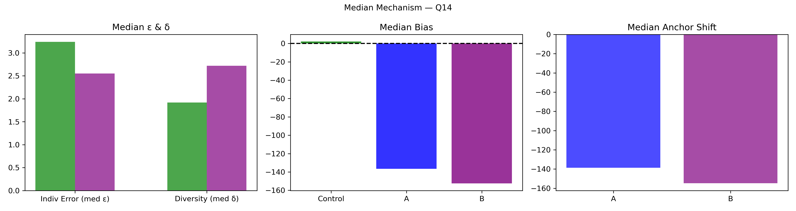

Question Q14: World Cup sponsor! What will McDonald's (MCD) stock close at on the NYSE tomorrow?
Super Summary
================================================================================
QUESTION Q14: 03_Export_0627_stats_4GLUEybtru.csv
World Cup sponsor! What will McDonald's (MCD) stock close at on the NYSE tomorrow?
Truth = 164.55
N_ctrl = 157 N_ext = 49
================================================================================
[1] COLLECTIVE ERROR (E)
Control Ec: 1103.7409 ± 1949.3752
CI = [ 0.1392 , 6869.4180 ]
Extremized Ex: 1.3502 ± 0.4240
CI = [ 0.5069 , 2.1685 ]
Difference (Ec - Ex) = 1102.3907
Percent Change = 99.88%
Bootstrap:
P(Ex < Ec) = 0.6470
→ 64.7% of samples show extremized < control
[2] INDIVIDUAL ERROR (ε)
Control mean ε = 1076.3308
Extremized ε = 2.7580
Percent Change = -99.74%
Welch t-test: t = 1.002, p = 0.318
Cohen's d = 0.091
[3] DIVERSITY (δ)
Control SD = 13385.9483
Extremized SD = 3.1661
Percent Change = -99.98%
Levene p = 0.5772
[4] ANCHOR DIAGNOSTICS
Anchor A = 163.48
Anchor B = 169.68
A_effective = True
B_effective = False
[5] EQUATION 6 CHECK
w_L = 1.0001 w_H = 1.0004
Delta = 2145.5479
Criterion_L = True Criterion_H = True
Meets both = True
[6] δ–ε–E SCENARIO
Scenario: δ:down, ε:down, E:down
Mechanism Explanation: Calibration: anchors pull predictions inward toward the truth, reducing both individual error and diversity and improving collective accuracy.
================================================================================
FINAL INTERPRETATION (with actual figures)
================================================================================
For Q14, collective error shifted from 1103.74 to 1.35 (99.88%). Bootstrap = 64.7%. Individual error changed by -99.74%, diversity changed by -99.98%. Scenario = δ:down, ε:down, E:down. Equation 6 feasibility = True.
================================================================================
Median Mechanism Plot
